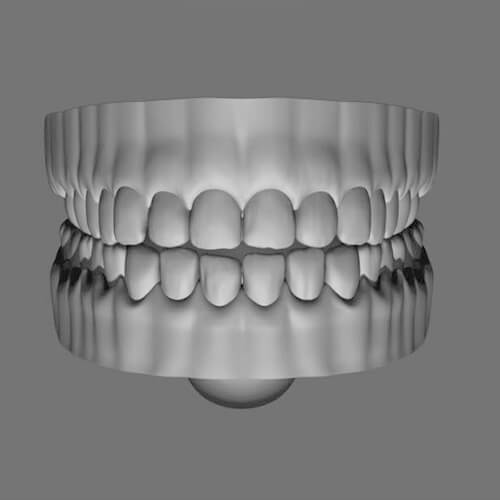
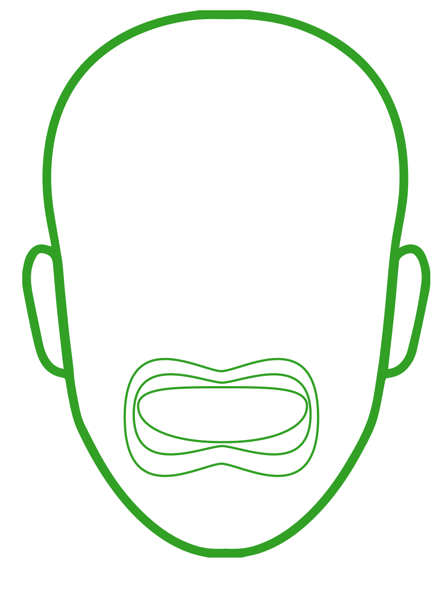
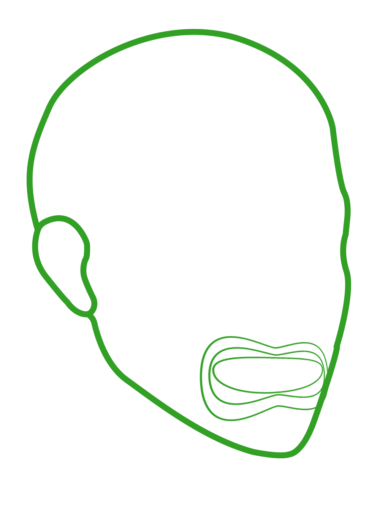
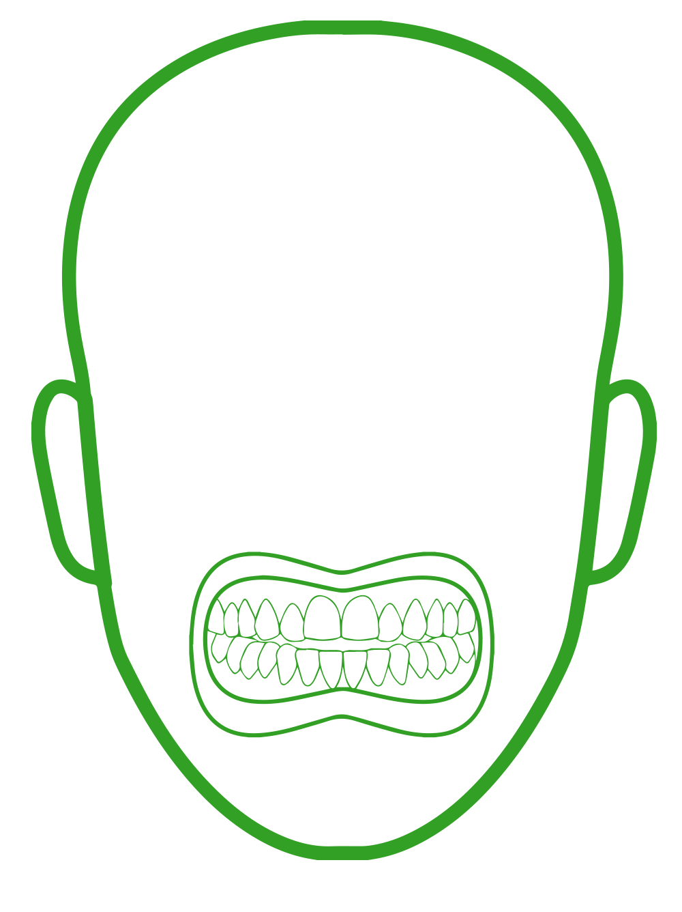

<ion-toolbar class="Toolbar" *ngIf="!cameraActive">
  <ion-title>
    <div class="Navbar">
        <ion-icon name="arrow-back" (click)="navBack()">
        </ion-icon>
        <h2>Envoi Photos</h2>
    </div>
  </ion-title>
</ion-toolbar>
<ion-content *ngIf="!cameraActive">
  <div class="Content">
  <ion-grid >
    <ion-row class="ion-justify-content-center">
      <ion-col class="Card" size="7" (click)="getCamera(0)">
        
        
          <ion-icon name="add-circle"></ion-icon>
      </ion-col>
      <ion-col class="Card" size="7">
        
        
          <ion-icon name="add-circle"></ion-icon>
      </ion-col>
      <ion-col class="Card" size="7">
        
        
          <ion-icon name="add-circle"></ion-icon>
      </ion-col>
    </ion-row>
  </ion-grid>

  </div>
  </ion-content>
<div class="cameraPreview" id="cameraPreview" *ngIf="cameraActive">
  
  
  
  <div class="Buttons">
    <ion-button (click)="flipCamera()"><ion-icon name="camera-reverse"></ion-icon></ion-button>
    <ion-button class="Take_Picture" (click)="takePicture()"><ion-icon name="camera"></ion-icon></ion-button>
    <ion-button (click)="stopCamera()"><ion-icon name="stop-circle"></ion-icon></ion-button>
  </div>
</div>

